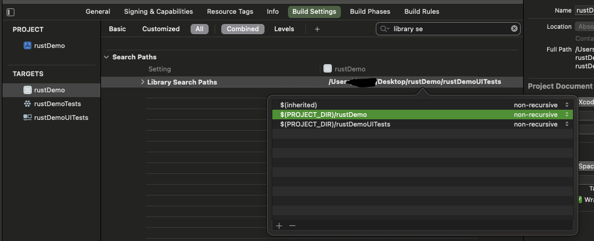
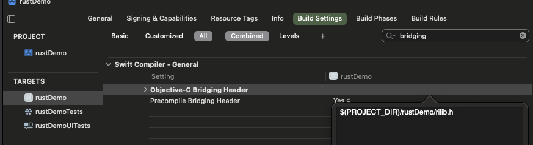

用 Rust 开发 iOS
文章目录
前言
Rust 是近几年特别火的语言，之前学过几次，每次学完之后就不了了之，没有实际用到项目中。
所以每次学习的时候都感觉像是最熟悉的陌生人，所以最近想要在移动端进行实战，于是开始了折腾之旅，这篇就是 Rust 在 iOS 上的探索。
本文默认你已经安装好了 Rust ，如果没有安装好可以参考Rust 环境搭建
添加iOS支持
rust 默认安装的是你本机的系统和架构，如果我们需要编译成 iOS 也能使用的，需要添加对 iOS 的支持，如下所示
|
|
这里只给出了 ARM64 和 x86_64 的，它们分别针对的是苹果64位处理器和模拟器。
如果你想支持旧版的也可以把较老的架构也装上，分别是 armv7-apple-ios 、 armv7s-apple-ios 、 i386-apple-ios
创建 rust 库
接下来我们需要创建 rust 库工程，用于存放 rust 代码。
|
|
--lib 表示创建一个库，而不是可执行程序。
配置导出的库名
在项目的 Cargo.toml 中加入如下代码
|
|
name 表示库的名字
crate-type 表示用来创建静态库还是动态库，这里两个都配置了。
编写rust代码
在 src/lib.rs 中加入如下代码
|
|
代码很简单，给传进来的字符串前面添加 Rust String:
lipo与cbindgen
代码写好了，我们还需要两个工具，使用如下命令安装
|
|
cargo-lipo 是用来编译 universal iOS 二进制包
cbindgen 则是根据 rust 文件生成对应的 C/C++ 头文件。
编译
我们先用 cbindgen 生成对应的头文件，然后进行编译出静态库
|
|
编译好的文件在 target/universal/release/librilib.a ，头文件在项目的根目录
生成的 rilib.h 内容如下
|
|
使用
拷贝静态库和头文件
首先通过 Xcode 创建一个工程，创建好工程后，把 librilib.a 和 rilib.h 拖进 Xcode 中，除此之外还需要对它们进行配置

在 Build Settings 中的搜索框中输入 library se 找到 Library Search Paths 双击之后，点击 + 号，把 librilib.a 所在的目录加进入，我这里就是 ${PROJECT_DIR}/rustDemo

设置好库文件的搜索路径之后还要设置头文件的路径，同样在搜索框中输入 bridging ，然后找到 Objective-C Bridging Header 把 rilib.h 加入其中，我这里就是 ${PROJECT_DIR}/rustDemo/rilib.h
添加调用的代码
配置好库文件和头文件之后我们就可以使用了，在 ContentView.swift 中加入如下代码
|
|
在这里把 rust 返回的字符串显示在了 Text 中
运行
运行结果如下，正确的显示在屏幕上